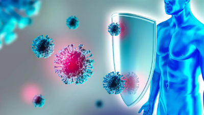

Imunologia
Definição
Ramo da Medicina que busca estudar o sistema imunológico e as condições que podem afetá-lo
Sistema Imunológico
Fundamental para a manutenção da vida humana defendendo o corpo contra doenças que o atacam, atuando no combate às células que sofrem alterações, como um vigilante imunológico. É complexo e envolve a relação entre tecidos, células e mediadores químicos, capazes de responder à presença dos antígenos, protegendo o corpo contra patógenos, como bactérias, vírus, fungos e parasitas.
Estrutura e funcionamento do Sistema Imune:
As células que constituem o sistema imune são chamadas de células brancas, glóbulos brancos ou leucócitos.
- Leucócitos Dentro dos leucócitos há células como os linfócitos, neutrófilos e macrófagos, que atuam no bloqueio e eliminação de vírus e bactérias.
- Linfócitos: Os linfócitos são os principais produtores de anticorpos, que são formados por substâncias chamadas de imunoglobulinas. Quando entramos em contato com um vírus ou bactéria, os linfócitos produzem novos grupos de linfócitos para combater aquele patógeno específico.
- Anticorpos: “Anticorpo é uma proteína que é capaz de se ligar no antígeno, ou seja, na proteína viral. Ela vai sinalizar para o corpo que aquilo é ofensivo e vai eliminá-lo. Então, vão ser ativadas várias células que vão destruir o vírus” - diretora do Laboratório de Biotecnologia do Instituto Butantan, Soraia Attie Calil Jorge
- Neutrófilos e Macrófagos: Estão ligados à proteção, mas atuam na parte da resposta celular– ou seja, atacam a célula que já foi infectada.
Principais tipos de imunidade:
Existem dois tipos principais de imunidade:
- Imunidade Inata: É a primeira linha de defesa e responde de forma rápida e não específica aos patógenos. Inclui barreiras físicas (como pele e mucosas), células fagocitárias (como macrófagos e neutrófilos), proteínas do sistema complemento, e outros mecanismos.
- Imunidade adaptativa: É mais específica e desenvolve-se após a exposição a um patógeno. Envolve linfócitos B (que produzem anticorpos) e linfócitos T (que matam células infectadas ou auxiliam outras células do sistema imunológico). Esta imunidade também possui memória, permitindo uma resposta mais rápida e eficaz em futuras exposições ao mesmo patógeno (mecanismo que a vacinação ativa).
O sistema imunológico também possui mecanismos de regulação para evitar respostas excessivas ou autoimunes, onde o corpo atacaria suas próprias células. A interação complexa entre os componentes da imunidade inata e adaptativa é essencial para a proteção eficaz contra doenças e manutenção da saúde.